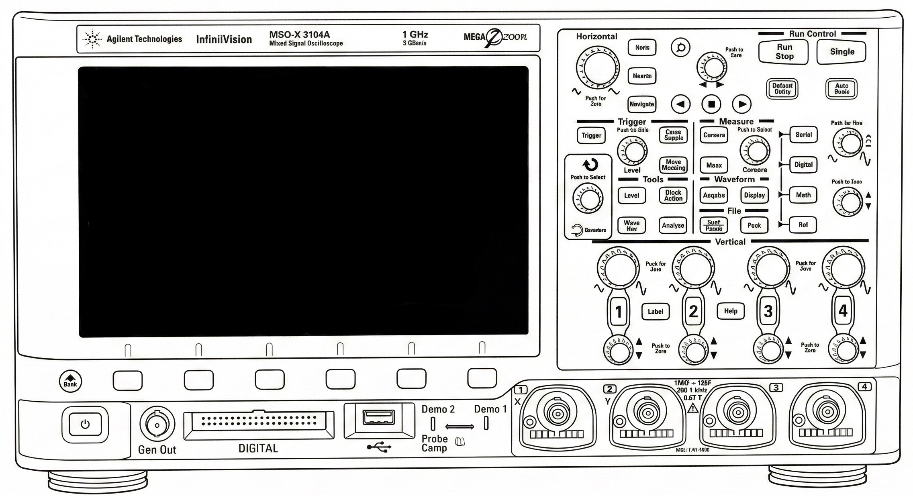

§2-II-7 AD変換 / DA変換 シミュレータ 操作説明書
1. 実験機材の表示・非表示
画面右端の ◀ 実験器具 タブをクリックするとサイドバーが開き、各器具のON/OFFを切り替えられます。
- 📺 オシロスコープ：波形を観察します（Agilent MSOX2004A）
- 🔋 直流電源：AD/DA変換機のアナログ入力にDC電圧を供給します（手順1・2で使用）。電圧ツマミはホイールで回し、クリックすると 粗調整（0.1V刻み）⇔ FINE（0.01V刻み）が切り替わります。現在の状態は本体の下に表示されます
- 🔊 発振器：AD/DA変換機にサイン波などを入力します（手順3・4で使用）
- AD/DA変換機：器具リストをクリックまたは最初から表示されています（ITF-203B）
各器具はドラッグ（タイトルバーをつかむ）で画面内を自由に移動できます。SIZE ADJUSTスライダーで個別に拡大縮小も可能です。
2. 結線の方法
実機と同様に、端子同士をクリックして接続します。
- 接続：片方の端子をクリック（選択状態になる）→ もう片方の端子をクリック → 結線完了
- 切断：端子を右クリック、または上部パネルの 🔌 結線クリア で全切断
- 端子の当たり判定は 青色（AD/DA）または 赤色（その他）の半透明ボックスで示されます
主な接続パターン：
- 直流電源 CH1(+) → AD/DA TB1、CH1(−) → TB2
- 発振器 OUTPUT → AD/DA TB1
- AD/DA TB5（DA出力）→ オシロ Ch1
- AD/DA TP1（原波形）→ オシロ Ch2
- AD/DA TP3（S/H信号）→ オシロ Ch1、TP8（比較器出力）→ Ch2、TP5（逐次比較のDA出力）→ Ch3
3. オシロスコープの操作
- 時間軸（KNOB_TIME）：ツマミの上でマウスホイールを回すと Time/Div が変わります
- 電圧軸（Volt1〜Volt4）：各チャンネルのツマミの上でホイールを回すと Volt/Div が変わります
- RunStop：波形の更新を停止（STOP）／再開（RUN）します
- AutoSet：現在の信号に合わせて時間軸・電圧軸を自動調整します
- カーソル（Cursr）：クリックするたびに、操作するカーソルが A → B（時間・縦線）→ Y1 → Y2（電圧・横線）→ OFF と切り替わります。Cursrツマミのホイール操作、または画面を直接クリックして位置を動かせます。画面左上に、時間差 Δt と 1/Δt、Y1・Y2 の電圧とその差 ΔY が表示されます。電圧は選択中のチャンネル（CH1〜CH3 のボタンで選択）の目盛りで読みます
- トリガーレベル（Level）：ツマミの上でホイールを回すとトリガーレベルが変わります（画面右上 T: xx.xxV）。CH1 の波形がこのレベルを下から上へ横切ると波形が静止します（TP3 などのパルス波形にもかかります）
4. AD/DA変換機（ITF-203B）の操作
- SW1（入力切換）：クリックで A-D入力（外部）/ マイク入力を切替。TB1に結線がある場合は自動で外部信号モードになります
- SW4（ビット数 / サンプリング周期）：クリックで量子化ビット数（4bit / 8bit）を切替
- SW5 / SW7（バイポーラ / ユニポーラ）：クリックで動作モードを切替（手順1はユニポーラ、手順3・4はバイポーラ）
- SW6 / SW8：OFFのまま使用します
- サンプリング周期切換（SAMPLING BS/00 横）：クリックで 5µs → 10µs → 50µs → 100µs → 200µs → 500µs → 5µs … と順に切替
基板の下の状態表示バーに、AD変換結果のデジタルコード（LED 8個。左が最上位ビット、点灯が1）と、現在の設定（入力・量子化ビット数・動作モード・サンプリング周期）が常に表示されます。4bit のときは左側の4個だけを使います。
直流電源を入力したときに観測できる信号：TP3 サンプル/ホールド制御信号、TP8 比較器出力（変換結果のビット列）、TP5 逐次比較のDA出力（入力と比べる電圧が1ビットごとに変わる階段波）。
5. 実験手順タブ（左サイドバー）
画面左端の 実験 ▶ タブをクリックするとサイドバーが開き、手順1〜4の配線・設定内容を確認できます。各手順をクリックすると詳細がポップアップ表示されます。
6. 実装済み機能一覧
- ✅ オシロスコープ波形表示（CH1 / CH2 / CH3）
- ✅ 時間軸・電圧軸ツマミ（ホイール操作）
- ✅ RunStop / AutoSet / カーソル（時間 A・B と電圧 Y1・Y2、Δt・ΔY 表示）
- ✅ 発振器（周波数・振幅・波形種類・オフセット設定）
- ✅ 直流電源（電圧設定・FINE モード・OUTPUT ON/OFF）
- ✅ AD/DA変換機との結線（TB1/TB2/TB5/TP1/TP3/TP5/TP8）
- ✅ 量子化ビット数切替（4bit / 8bit）
- ✅ サンプリング周期切替（5µs〜500µs）
- ✅ DA出力波形の階段状再現・エイリアス警告表示
- ✅ 逐次比較型AD変換器の内部波形（TP3: S/H信号、TP8: 比較器出力、TP5: DA出力の階段波）
- ✅ デジタルコードのLED表示とスイッチ設定の表示（AD/DA変換機の下）